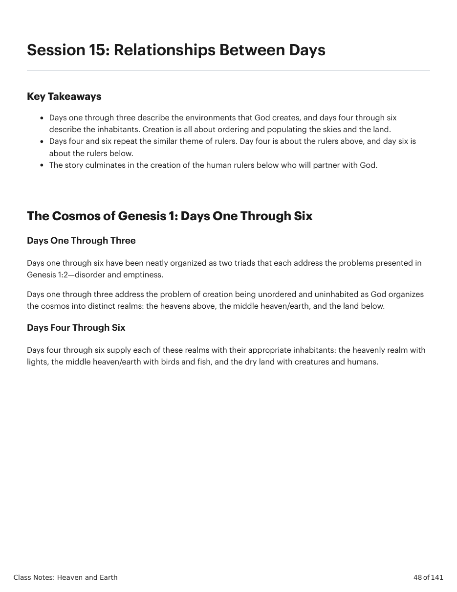
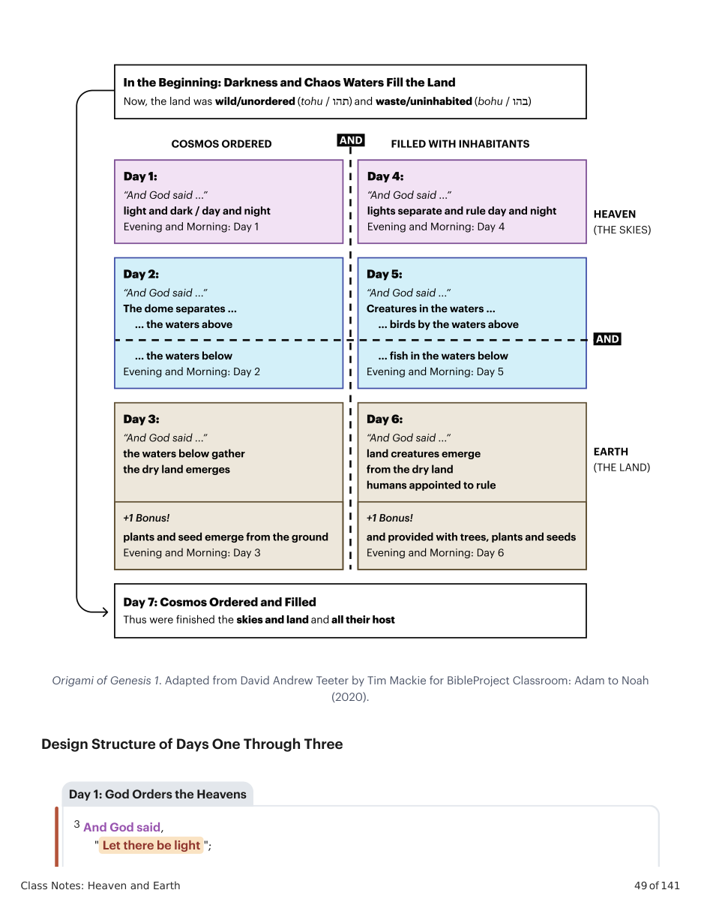
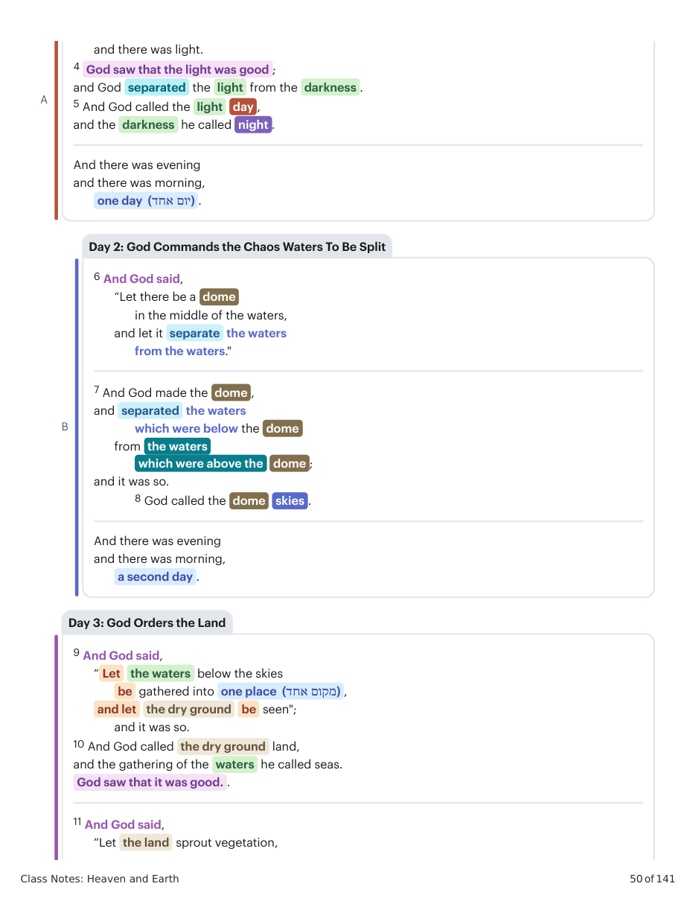
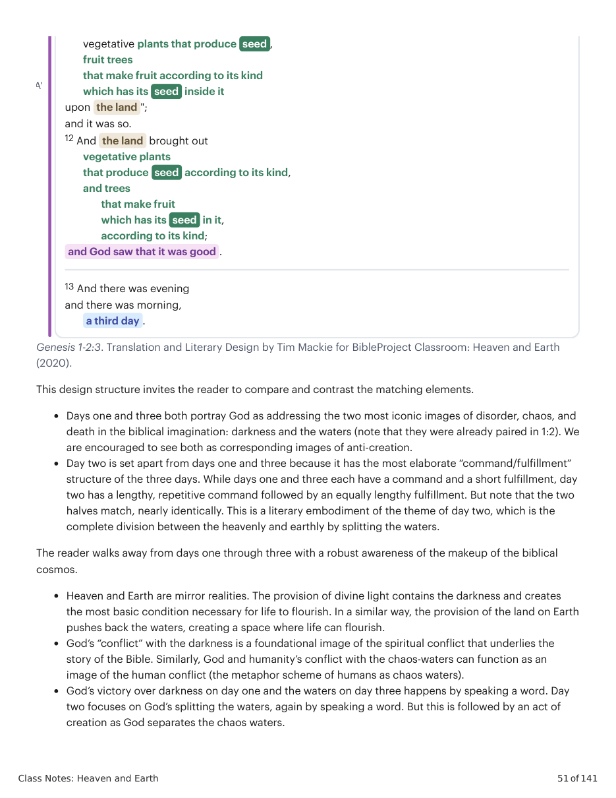
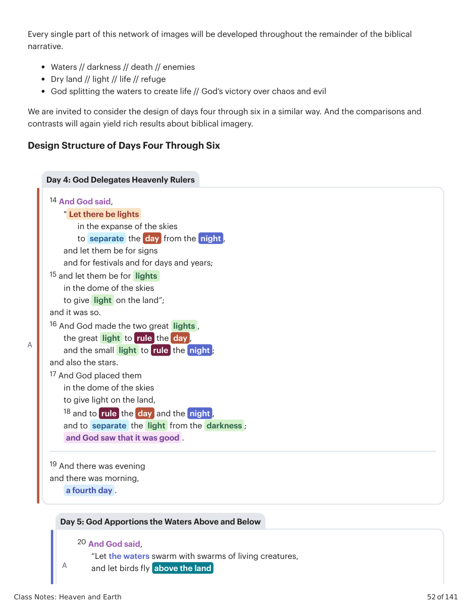
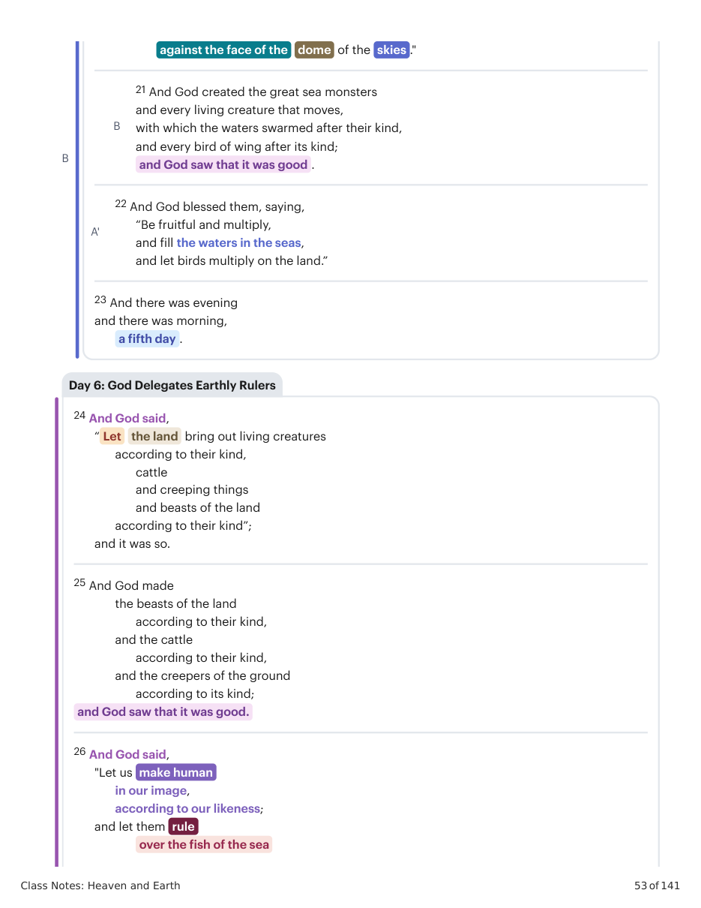
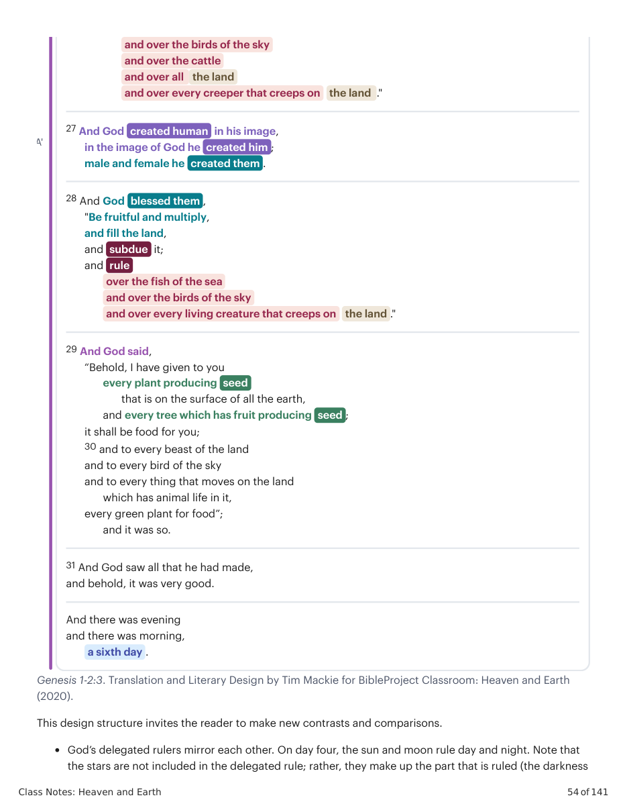
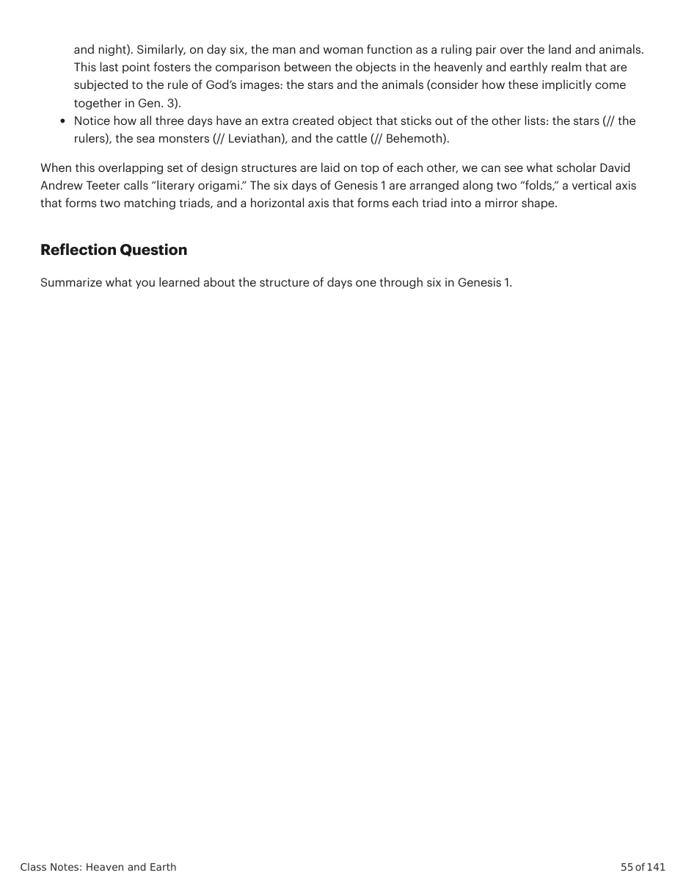
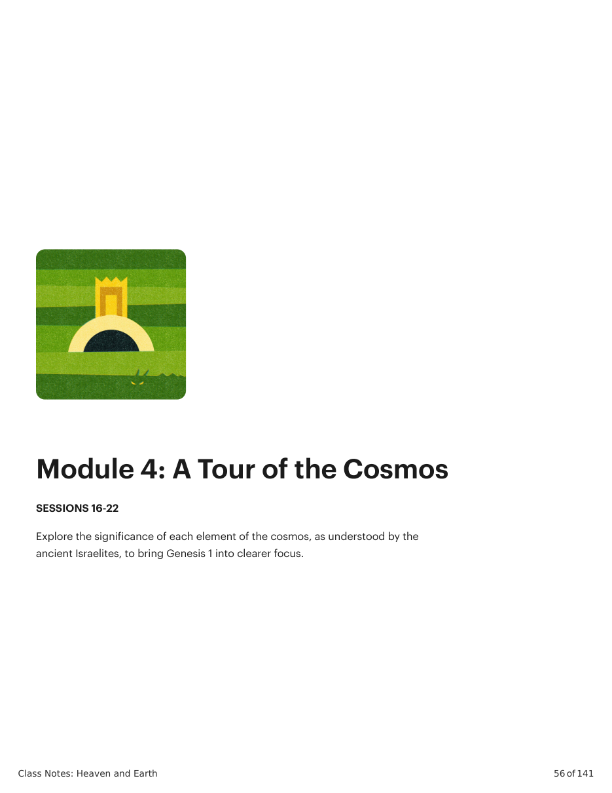

(2020).
(2020).
This design structure invites the reader to compare and contrast the matching elements. Days one and three both portray God as addressing the two most iconic images of disorder, chaos, and death in the biblical imagination: darkness and the waters (note that they were already paired in 1:2). We are encouraged to see both as corresponding images of anti-creation. Day two is set apart from days one and three because it has the most elaborate “command/fulfillment” structure of the three days. While days one and three each have a command and a short fulfillment, day two has a lengthy, repetitive command followed by an equally lengthy fulfillment. But note that the two halves match, nearly identically. This is a literary embodiment of the theme of day two, which is the complete division between the heavenly and earthly by splitting the waters. The reader walks away from days one through three with a robust awareness of the makeup of the biblical cosmos. Heaven and Earth are mirror realities. The provision of divine light contains the darkness and creates the most basic condition necessary for life to flourish. In a similar way, the provision of the land on Earth pushes back the waters, creating a space where life can flourish. God’s “conflict” with the darkness is a foundational image of the spiritual conflict that underlies the story of the Bible. Similarly, God and humanity’s conflict with the chaos-waters can function as an image of the human conflict (the metaphor scheme of humans as chaos waters). God’s victory over darkness on day one and the waters on day three happens by speaking a word. Day two focuses on God’s splitting the waters, again by speaking a word. But this is followed by an act of creation as God separates the chaos waters. A' vegetative plants that produce seed , fruit trees that make fruit according to its kind which has its seed inside it upon the land "; and it was so. 12 And the land brought out vegetative plants that produce seed according to its kind, and trees that make fruit which has its seed in it, according to its kind; and God saw that it was good . 13 And there was evening and there was morning, a third day . Every single part of this network of images will be developed throughout the remainder of the biblical narrative. Waters // darkness // death // enemies Dry land // light // life // refuge God splitting the waters to create life // God’s victory over chaos and evil We are invited to consider the design of days four through six in a similar way. And the comparisons and contrasts will again yield rich results about biblical imagery. Design Structure of Days Four Through Six A 14 And God said, " Let there be lights in the expanse of the skies to separate the day from the night , and let them be for signs and for festivals and for days and years; 15 and let them be for lights in the dome of the skies to give light on the land”; and it was so. 16 And God made the two great lights , the great light to rule the day , and the small light to rule the night ; and also the stars. 17 And God placed them in the dome of the skies to give light on the land, 18 and to rule the day and the night , and to separate the light from the darkness ; and God saw that it was good . 19 And there was evening and there was morning, a fourth day . A 20 And God said, “Let the waters swarm with swarms of living creatures, and let birds fly above the land Day 4: God Delegates Heavenly Rulers Day 5: God Apportions the Waters Above and Below B against the face of the dome of the skies ." B 21 And God created the great sea monsters and every living creature that moves, with which the waters swarmed after their kind, and every bird of wing after its kind; and God saw that it was good . A' 22 And God blessed them, saying, “Be fruitful and multiply, and fill the waters in the seas, and let birds multiply on the land.” 23 And there was evening and there was morning, a fifth day . 24 And God said, “ Let the land bring out living creatures according to their kind, cattle and creeping things and beasts of the land according to their kind”; and it was so. 25 And God made the beasts of the land according to their kind, and the cattle according to their kind, and the creepers of the ground according to its kind; and God saw that it was good. 26 And God said, "Let us make human in our image, according to our likeness; and let them rule over the fish of the sea Day 6: God Delegates Earthly Rulers Genesis 1-2:3. Translation and Literary Design by Tim Mackie for BibleProject Classroom: Heaven and Earth
(2020).
This design structure invites the reader to make new contrasts and comparisons. God’s delegated rulers mirror each other. On day four, the sun and moon rule day and night. Note that the stars are not included in the delegated rule; rather, they make up the part that is ruled (the darkness A' and over the birds of the sky and over the cattle and over all the land and over every creeper that creeps on the land ." 27 And God created human in his image, in the image of God he created him ; male and female he created them . 28 And God blessed them , "Be fruitful and multiply, and fill the land, and subdue it; and rule over the fish of the sea and over the birds of the sky and over every living creature that creeps on the land ." 29 And God said, “Behold, I have given to you every plant producing seed that is on the surface of all the earth, and every tree which has fruit producing seed ; it shall be food for you; 30 and to every beast of the land and to every bird of the sky and to every thing that moves on the land which has animal life in it, every green plant for food”; and it was so. 31 And God saw all that he had made, and behold, it was very good. And there was evening and there was morning, a sixth day . and night). Similarly, on day six, the man and woman function as a ruling pair over the land and animals. This last point fosters the comparison between the objects in the heavenly and earthly realm that are subjected to the rule of God’s images: the stars and the animals (consider how these implicitly come together in Gen. 3). Notice how all three days have an extra created object that sticks out of the other lists: the stars (// the rulers), the sea monsters (// Leviathan), and the cattle (// Behemoth). When this overlapping set of design structures are laid on top of each other, we can see what scholar David Andrew Teeter calls “literary origami.” The six days of Genesis 1 are arranged along two “folds,” a vertical axis that forms two matching triads, and a horizontal axis that forms each triad into a mirror shape.
Summarize what you learned about the structure of days one through six in Genesis 1.








